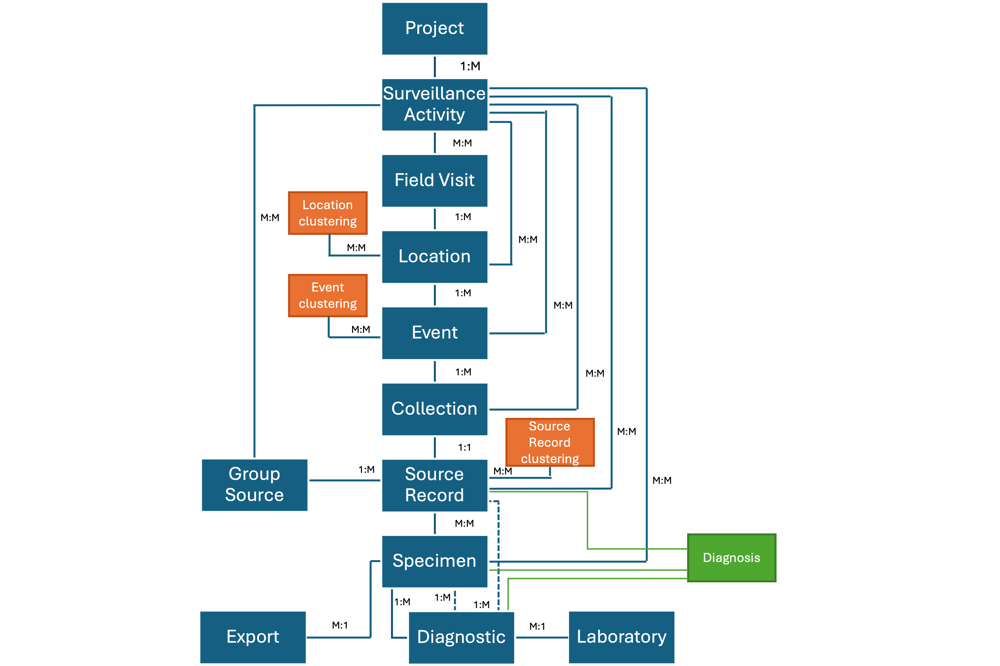
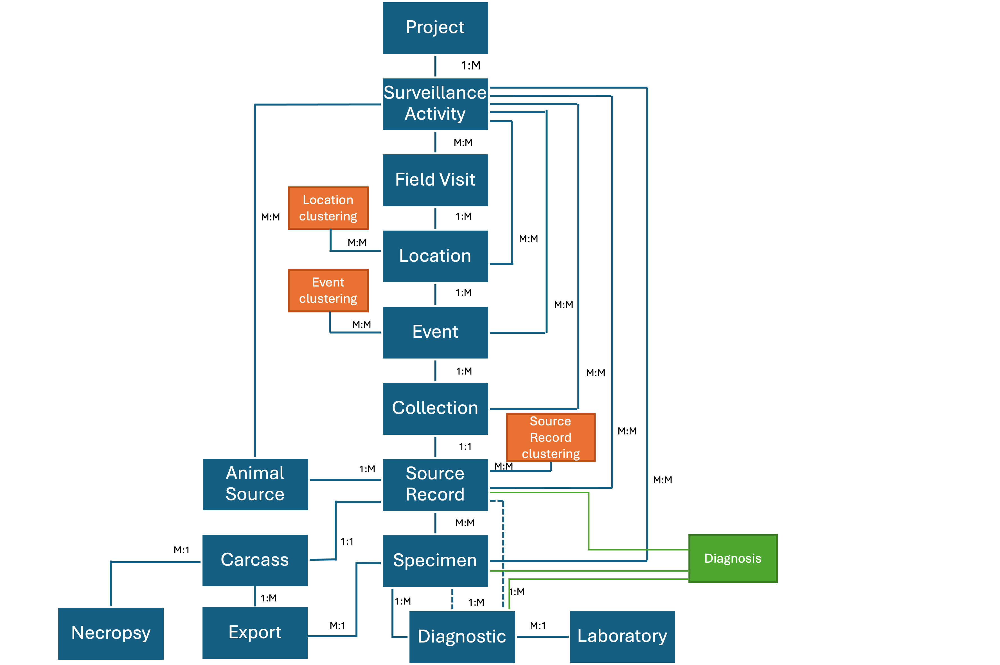
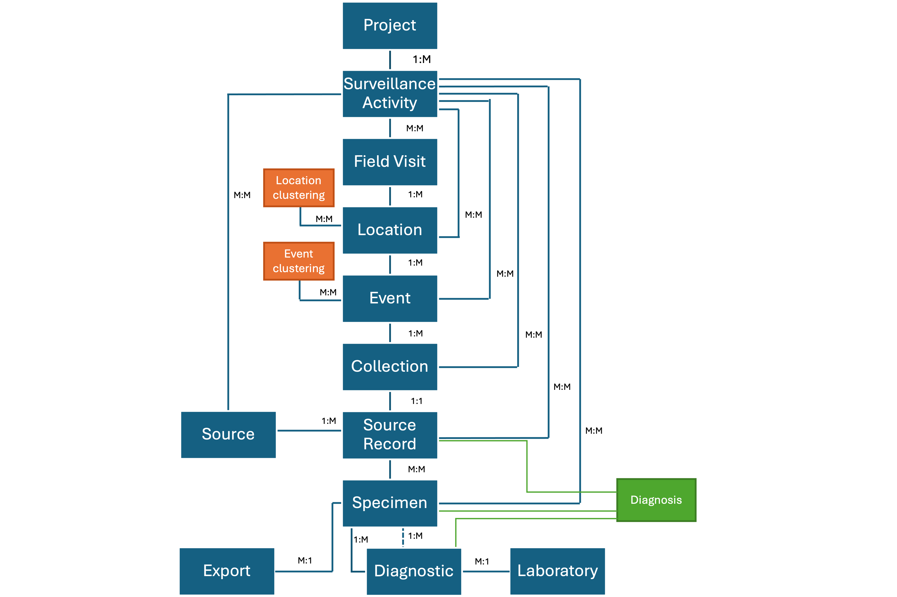

Data Model
Data in the WildHealthDB is organized in units that are generally hierarchical, starting from the highest level of “Projects” down to “Surveillance Activities”, “Field Visits”, “Locations”, “Events”, “Sources”, “Source Records”, “Specimens”, and “Diagnostics”. Briefly, Projects are a set of Surveillance Activities with a common leader and organizer (e.g., a national veterinary services agency). Surveillance Activity is a surveillance task that have a specific methodology and objectives. Field Visit represents a period of time when surveillance activities are conducted in the field. The Location is a specific area where surveillance activities are conducted. An Event is a site where wildlife health surveillance data is collected from. Sources are the units that can provide Specimens for hazard detection. Specimens are tissue taken from the Sources at time t (Source Records). Diagnostics are the tests conducted in lived animals (“Animal Source”), Carcasses, or Specimens collected to assess hazards. Diagnosis are the final status assigned to a Diagnostic, a Specimen, or a Source at time t with respect to the hazards surveyed, based on well-documented case definitions. Exceptions to the “hierarchical” rule are given in the sections for each unit below. To learn more about these units, please scan the menu on the top right corner of this website and click on the corresponding unit. A diagram shoing the relationship among the units is shown at the bottom of this website.
Project
A Project in the data model is a surveillance initiative supported by specific entities. For example, the PREDICT Project funded by USAID, an isolated cross-sectional study with a single field visit to a single location (sample collection in a market), or a national or local wildlife health surveillance network led by a government agency. Projects are the highest hierarchical unit in the database and they contain at least one Surveillance Activity. Projects can involve a single date or they can extend for as long as wanted.
Surveillance Activity
A Surveillance Activity in the data model refers to a set of activities to collect data with the aim of detecting, proving freedom of disease, measure incidence or prevalence, or assessing trends of specific health hazards within specific populations, using a standardized methodology. For example, the longitudinal assessment of coronavirus shedding in two Eidolon helvum bat roosts in Africa.
Surveillance Activities can encompass targeted surveillance, scanning surveillance, citizen science monitoring, freedom of disease assessments, ranger patrols, and others. An example is a capture-mark-recapture study targeting lead accumulation in a specific vulture population involving the collection of blood samples and conducting tests using the same capture, marking, and diagnostic methods. Surveillance Activities include detailed metadata that describe their objectives and methods, including information on the targeted species, populations, hazards, type of Sources and Specimens, collection methods, Diagnostics, and case definitions for Diagnostics, Specimens, and Sources.
Field Visits, Locations, Events, Sources, Source Records, and Diagnostics usually belong to a single Surveillance Activity. The Surveillance Activity that commanded the Field Visits at different Locations to document Events, collect Sources and Specimens, perform Diagnostics for a specific hazard, and provide Diagnosis for Diagnostics, Specimens, and Sources. However, there are exceptions to this rule. For example, rodents trapped in the same Event may be sampled using the same methodology but tested for coronaviruses and Rickettsia sp. In this scenario, two Surveillance Activities should be assigned to the Field Visits, Locations, Events, Source Records, and Specimens. Diagnostics for either group of pathogens and the corresponding Diagnosis should only get a single Surveillance Activity.
Another exception to this rule is the collection of Specimens from Sources that belonged to other Surveillance Activities. For example, marked rodents that were released, and later captured and tested for a specific hazard under Surveillance Activity A that were captured and sampled during Surveillance Activity B months later. In this case, these rodents will be part of two Surveillance Activities (A and B).
Another exception occurs when Specimens were collected during past surveillance efforts but are included in new surveillance initiatives. For instance, using pangolin Specimens collected by veterinarians in 2017 and tested for Salmonella sps. which are then tested in 2023 for SARS-CoV-2. In this case, the latter Surveillance Activity is assigned to the Specimens being tested (as a second Surveillance Activity) and to the SARS-CoV-2 Diagnostics and Diagnosis. Therefore, these Specimens should have two Surveillance Objectives. The first one corresponds to the original Surveillance Activity that lead to their collection and the second one corresponds to the Surveillance Activity testing them for SARS-CoV-2. The Source (pangolin) and the corresponding Record should keep a single Surveillance Activity.
Moreover, Necropsies might be conducted as part of a secondary Surveillance Activity (on a Carcass that was collected under other Surveillance Activity) or new Specimens could be created from a previously unused Carcass as part of a new Surveillance Activity. In this case, the new data (Necropsy and Specimens) should receive the second Surveillance Activity only. Diagnostics using the new Specimens should receive the second Surveillance Activity only. The Carcass should receive the Surveillance Activity that lead to its collection only.
Therefore, Surveillance Activities can be interconnected through the reuse of Specimens or expanding the data generated by previous Surveillance Activities. These connections will be evident in the exported data, where each component with multiple Surveillance Activities (e.g., Specimen) will be represented by one row per Surveillance Activity.
Outbreak Investigation
All outbreak investigations are considered Surveillance Activities. Outbreak Surveillance Activities can encompass the Field Visit that lead to the Outbreak detection and the following Field Visits associated with Outbreak investigation and control. The detection could have been made during a Field Activity conducted by rangers during their patrols. This initial Field Visit and its components should be assigned to a the ranger patrol Surveillance Activity and to the Outbreak Surveillance Activity. The following Field Activities that could be completed by veterinarians or public health officers receive the outbreak Surveillance Activity only.
Field Visit
A Field Activity in the data model represents a visit to the field within a specific time period, including a start and end date, to find Events, Sources, and Specimens (see below) and document data from them. A Field Visit can include visits to various types of Locations, such as markets, natural areas, rehabilitation centers, caves, etc that are completed within the same trip and common start and end date.
Location
A Location in the data model refers to a general place where Events, Source Records, Carcasses, and Specimens can be collected from. During a single Field Visit, data may be collected from various Locations, such as two rehabilitation centers, a cave within a protected area, or three different zones within another protected area. In this case, there would be a total of six Locations. Therefore, a Location serves as a way to group data in a more generalized manner compared to the exact latitude and longitude coordinates where data is collected (‘Event’; see below), but it provides more specificity than the overall ‘Field Activity’.
What a ‘Location’ represents will inevitably vary depending on the Surveillance Activity methodology. For example, for the collection of arthropods, a Location can represent a parcel where traps are set. In a structured research, the Location could represent a grid cell. In ranger patrols, the Location can correspond to either the full protected area, or a specific zone within the protected area. It is up to the user to define what unit the Location represents and report it in the Surveillance Activity metadata.
Properties of Location include the start and end date, a unique identifier, the cross referential identifier, the type of location, environmental characteristics, among others (see Data Dictionary).
Locations can be clustered in units smaller than Field Visit if needed. For a detail explanation, see “Grouping of Locations, Events, and Source Records” section below.
Event
An Event in the data model refers to a distinct wildlife health event that occurs at a specific longitude and latitude on a particular date. A single Location can include between zero to a indefinite number of Events.
The definition of a wildlife health event, and thus what an ‘Event’ represents, will inevitably vary depending on the Surveillance Activity and the particular definition of Event. For example, in active surveillance efforts, an Event can refer to the site and time where and when animals are captured to obtain Specimens. The site where a dead dead animal is found during a ranger patrol can be an Event. Furthermore, an ‘Event’ can be defined as the site where water is collected from a pond. In the case of surveillance for vector-borne diseases, an Event can represent a specific point in time and space where one or several traps for vectors are deployed. In the case of beached fish, an Event can represent each individual dead fish at one extreme, or the total count of dead fish across the beach as a single point in time and space at the other extreme. In the context of a wet market, the definition of Event can be applied to the market, or to the vendor, or to the stall, or to the cage. Structured studies can have multiple levels of hierarchy (zone, grid, area, trap, etc.) that represent can Event. For study A it could the grid cell whilst for study B it could each trap.
Moreover, the presence of at least one Source could be needed to establish an Event. For example, a dead animal found during a ranger patrol. In Active Surveillance, an Event can occur without the presence of any Source, for example, when a capturing effort ended in the absence of animals captured. Additionally, the definition of an Event can include healthy animals found nearby a dead animal or animals not captured nearby animals captured, or not, depending on the Event definition.
Consequently, an Event in wildlife health surveillance can represent different spatio-temporal units depending on the objectives and the methodology used to collect wildlife health data. It is up to the user to define what unit the Event represents and report it in the Surveillance Activity metadata and it should be unique for a specific Surveillance Activity.
Properties of Event include the start and end date, a unique identifier, the cross referential identifier, longitude, latitude, the coordinate system reference used, the accuracy of the latitude and longitude valies, date-time, among others (see Data Dictionary).
Events can be clustered in units smaller than Location if needed. For a detailed explanation, see “Clustering of Locations, Events, and Source Records” section below.
Source and Source Records
Generalities
A Source in the data model is a unit that can be observed and provide Specimens, including carcasses, organic tissue, abiotic tissue, or arthropods. The data model manages four types of Sources: i) a co-specific group of animals (Group Source), ii) individual animals (Animal Source), iii) sites that can provide abiotic tissue of interest or biotic material of animal origin whose individual or group animal of origin is unknown (Environmental Source), and iv) sites where active or passive collection arthropods at any life stage is completed (Arthropod Source). A Group Source could correspond to a specific bat roost of species X sourcing guano, an Animal Source could be a collared animal, an Environmental Source could be a pond where water is collected from, and an Arthropod Source could be a site where mosquito larvae are collected from. Sources contain time-independent data only, such as the species of an animal in the case of a Group Source or an Animal Source (more below).
All Sources can be individually identified and followed over time. Animal Sources and Group Sources might not be individually identified preventing following them over time. All Sources belong to at least one Surveillance Activity but they can be defined prior to any Event or after. For example, a set of animals can all be individually identified and released before any Field Visit starts. Then, capturing, recapturing, and sampling are conducted in following Field Visits. In that case, these animals are initially Animal Sources in the data model linked to the corresponding Surveillance Activity only. Once the Field Visits begin, all, none, or some of the Sources (rodents) will be part of Events. The Sources that are not part any Event by the end of the Surveillance Activity will still be part of it, but they will not have any data associated with Events, Specimens, Diagnostics, etc. Therefore, Sources might not be part of any Event.
Sources that are individually identified during an Event will certainly belong to at least that Event when they were identified and potentially others. For example, a bat (Source) caught in a mist net (Event), identified individually, and recaptured in a following Event. This bat is linked to the capture Event and the recapture Event.
Sources that are not individually identified will belong to the Event when they were observed or captured only. For example, a bat (Source) that is captured and sampled during an Event but not marked or a dead animal found by a ranger during a patrol. The bat and the animal found are linked only to the Event they were capture and observed, respectively.
Sources observed, collected, or captured at time t are linked to Events through a Source Record (the Source at time t). Source Records contain time-dependent data only, such as health status at time t. Sources individually identified can be followed longitudinally and have multiple Source Records that link them to multiple Events over time.
An Event can contain any number of Source Records associated with Sources of any type. For example, an Event can contain Group Source Records, Animal Source Records, Environmental Source Records, and Invertebrate Source Records, two of them, one of them, or three of them. Also remember that an Event might not contain any Source Record (e.g., a set up mist net without birds captured).
Group Source
A Group Source is a unit of co-specific individuals (animals of the same species) associated to a herd, an area, a site, a farm, a cage, a stall, an enclosure, or another that makes the individuals part a single epidemiological unit. Group Sources can be observed, captured, and provide Specimens at time t. Data of a Group Source include the species, the identifier, the cross identifier, and the date of extinction (see Data Dictionary).
The purpose of Group Source is to record individuals at health events at the species level instead of individual by individual. This can occur when herds are the unit of interest, when protected area rangers find animals of the same species in a health event, or animals in a unit such as a cage, stall, or vendor of a market. For example, animals of two species in a single cage. If the animals are not meant to be tracked individually, the animals of each species in the cage represent a Group Source.
Group Source Record
A Group Source Record consists of a count of the animals in the Group Source at time t, stratified by sex, age, and health status (e.g., healthy, injured, sick, or dead). Other properties of the Group Source Record are observed anomalies, potential causes of disease or death if they apply at time t among others (see Data Dictionary). Properties of a Group Source Record are documented at the group level and each property can receive multiple options. For example, a Group Source with three dead animals can receive several potential causes of death. Therefore, is not possible to know the distribution of several properties across individuals of the Group Source Record, but only that it was present in at least one individual (the exception is the “species” property and other properties when a Group Source has a single individual).
Group Source Records can include a mix of dead, diseased, poisoned, infected, injured, and healthy individuals of the same species or animals of the same species that belong to just one of these categories exclusively (all animals are dead for example). A Group Source Record of only healthy animals can also be part of a Health Event depending on the definition of Health Event (e.g., animals of species X with all of them observed healthy next to dead animals of species Y and Z). Group Source Records can have a single individual. For example, rangers patrolling a protected area might find a dead animal of species X and two dead animals of species Y at the same site (Event) and rangers record their animal data as Group Sources. If this is the case, the animal of species X belong to a Group Source Record and the animals of species Y correspond to another Source Group Record. Moreover, if only a single animal of a known herd is observed at time t, then that individual is the representation of the herd for the Source Group Record. Finally, an Event can have more than one Group Source Record of the same species. For example, animals of the same species in two cages hold by a vendor in market where each vendor is considered an Event. Then each cage with the corresponding animals could be considered a unit, and therefore, a Group Source Record belonging to the same vendor (same Event).
An Group Source can be used directly for a Diagnostic (e.g., assessment of fat in carcasses of animals belonging to a specific herd). The data model can accommodate Diagnostics applied to the “group” itself rather than Specimens taken from that Group Source. The diagnostic information is part of the set of Diagnostics conducted in the corresponding Group Source (see Diagnostics).
An animal of species X documented as part of a Group Source Record must not be included as an Animal Source Record and vice-versa. If an Event contains a Group Source Record and an Animal Source Record of species X, then the total number of animals of species X at the Event is the sum of number of animals of species X in the Group Source Record and the single individual of species X recorded as an Animal Source Records. An example is a herd of cows illegally raised in a protected area whose health is assessed at time t. The herd of this example contains 20 cows. Two of them are sampled and the rest are part of a single unit. In this case, the sampled cows can be added as Animal Source Records (one per sampled cow) and the remaining 18 animals can be added as a single Group Source Record that distributes the animals per sex, age, and health status. The total number of cows are the individuals in the Group Source Record (18) and the two cows recorded as Animal Records (2). The “herd” identity of the 20 cows can be kept using a “Tag” (see below) so the three Source Records receive the same unit (another option is to add the 20 cows as a Group Source but the data of the specific animals sampled will be lost. See next section). If the Group Source Record contains the original 20 cows and also two Animal Source Records, then the total number of cows will be 22.
Animal Source
An Animal Source represents an individual animal whose specific individual-level data is of interest. Animal Sources can be observed, captured, tested, and provide Specimens at time t, including the full carcass to have a Necropsy completed. Animal Source data includes the species, the identifier, the cross identifier, the sex, and the date of death (see Data Dictionary). Past marking codes (if any have been used) are considered immutable and entered as data of an the Animal Source.
An example of Animal Sources are animals of different or the same species in a cage located in a live market. If the data of the animals is to be collected at the individual-level, then each individual represents an Animal Group Source in the cage.
Animal Source Record
An Animal Source Record consists of an Animal Source at time t . Properties of an Animal Source Record are its age, health status, observed anomalies, and potential cause of disease or death if they apply at time t, among others (see Data Dictionary). The marking of an individual animal at time t is considered mutable and a property of the corresponding Animal Source Record. Properties of an Animal Source Record can receive single or multiple choices. For example, the observed health status in only one (live healthy, live sick) but an Animal Source Record can receive several observed anomalies if they apply at time t (wounded, hair loss, diarrhea, etc. See Data Dictionary).
An Animal Source can be either dead, diseased, poisoned, infected, injured, or healthy at time t. An Animal Source Record with an observed health status “live healthy” can be part of an Event if they are of interest (e.g., a healthy animal of species X next to dead animals of species X, Y, and Z; healthy animals captured for Specimen collection).
An Animal Source can be used directly for a Diagnostic (e.g., X-rays in a live animal). The data model can accommodate Diagnostics applied to the “animal” itself rather than a Specimen taken from that Animal Source. The diagnostic information is part of the set of Diagnostics conducted in the corresponding Animal Source (see Diagnostics).
An animal of species X documented as part of a Group Source Record cannot be included as an Animal Source Record and vice versa. If an Event contains a Group Source Record and an Animal Source Record of species X, then the total number of animals of species X at the Event is the sum of number of animals of species X in the Group Source Record and the single individual of species X recorded as an Animal Source Record. An example is a herd of cows illegally raised in a protected area whose health is assessed at time t. The herd of this example contains 20 cows. Two of them are sampled and the rest are part of a single unit. In this case, the sampled cows can be added as Animal Source Records (one per sampled cow) and the remaining 18 animals can be added as a single Group Source Record that distributes the animals per sex, age, and health status. The total number of cows are the individuals in the Group Source Record (18) and the two cows recorded as Animal Records (2). The “herd” identity of the 20 cows can be kept using a “Tag” (see below) so the three Source Records receive the same unit (another option is to add the 20 cows as a Group Source but the data of the specific animals sampled will be lost. See next section). If the Group Source Record contains the original 20 cows and also two Animal Source Records, then the total number of cows will be 22.
Carcass
The carcass of a dead Animal Source can be used as a source for Specimens and Diagnosis. A Carcass entered to the database comes from a specific Animal Source and they are collected at a single specific time t. Therefore, each Carcass is associated with one and only one Animal Source Record (when the Carcass was collected). Properties of a Carcass include its decomposition condition, storage during transport, storage in a facility, and its location (building, room, refrigerator, etc.), among others (see Data Dictionary). The data regarding changes in the storage of the carcass can have many units for the same carcass if it changes over time.
An carcass can be used directly for a Diagnostic (e.g., X-rays in a dead animal). The data model can accommodate Diagnostics applied to the Carcass itself rather than a Specimen taken from that Carcass (see Diagnostics). The diagnostic information is part of the set of Diagnostics conducted in the corresponding Animal Source.
Necropsy
A Necropsy is associated with a specific Animal Source Record that can occur any date after the corresponding Animal is found dead. However, a Necropsy is tied to the Carcass, which is tied to the Animal Source Record when it was collected. The earliest date a Necropsy can occur is when the dead animal was found and a Field Necropsy was conducted (no Carcass collection) or when the Carcass was collected and used for Necropsy. Necropsy data includes the identifier, the cross identifier, the date of the necropsy, findings per system, among others (see Data Dictionary).
Necropsies can be primary or secondary. A primary necropsy usually starts with an intact carcass (not previously used in a necropsy). A secondary necropsy is usually conducted by a veterinarian pathologist using pictures of the primary necropsy or using a carcass already necropsied.
Environmental Source
An Environmental Source is a unit in space where Specimens that cannot be associated with a Group Source, an Animal Source, or Arthropod Source can be collected from (e.g., feces found in the field but unknown individual dropping them or unknown group of animals with the individual that could have dropped them). Properties of an Environmental Source include the type (e.g., water, soil, sediment, air , feces), the species (only for biotic types if it is known), the identifier, and the cross identifier (see Data Dictionary). The species can be either NA (abiotic type such as water, sediment, or soil), “unknown” (e.g., “unknown” for feces found by themselves), or the most accurate taxonomy level that can be given to a biotic Environmental Source if barcoding or another species determination method is not used (e.g., “mammalia” for feces found by themselves).
Environmental Source Record
An Environmental Source Record is the collected biotic or abiotic tissue from the Environmental Source at time t using the same method. For example, the water obtained from a pond at time t across devices targeting water collection. This mean that air collected by any number of devices “X” deployed at the Environmental Source at time t to collect air is an Environmental Source Record and air collected by any number of devices “Y” deployed at the Environmental Source at time t to collect air is another Environmental Source Record. A key difference between the Environmental Source and the Group and Animal Sources is that an Event can contain multiple Environmental Source Records of the same Environmental Source (one per collection method) compared with Group and Animal Sources Records types that only have a single Source Record per Source per Event. The properties of an Environmental Source Record include the identifier, the cross identifier, the volume collected, the unit of the volume collected, among others (see Data Dictionary).
Arthropod Source
An Arthropod Source is a unit in space where collection of arthropods can be completed (e.g., a household in the forest where traps are set). Properties of an Arthropod Source include the identifier, the cross identifier, the area covered, among others (see Data Dictionary).
If the interest of the Surveillance Activity is at the arthropod individual level (e.g., butterflies with problems in their wings or with parasites), then the user should consider these arthropods as Animal Sources. Arthropods from Animals Sources (attached ticks, lice, fleas, mites) are Specimens from an Animal Source and not Arthropod Sources.
Arthropod Source Record
An Arthropod Source Record is the collected arthropods from the Arthropod Source at time t using the same method. For example, the number of mosquitoes obtained at the household in the forest at time t per species and age-sex-condition across the traps targeting the same group of arthropods. This mean that adult mosquitoes of n species collected by any number of CO2 traps deployed at the Arthropod Source at time t is an Arthropod Source Record and that adult mosquitoes of n species collected by any number of BG traps deployed at the Arthropod Source at time t is another Arthropod Source Record. A key difference between the Arthropod Source and the Group and Animal Sources is that an Event can contain multiple Arthropod Source Records of the same Arthropod Source (one per collection method) compared with Group and Animal Sources Records types that only have a single Source Record per Source per Event. The properties of an Arthropod Source Record include the identifier, the cross identifier, the species, the age, sex, condition of the females, the corresponding number, among others (see Data Dictionary).
Sources can be clustered in units smaller than Event if needed. For a detailed explanation, see “Clustering of Locations, Events, and Source Records” section below.
Clustering of Locations, Events, and Source Records
Following the standard units in the data model, the simplest data of a Field Visit is an Source Record found in a single Event in a single Location. However, depending on the methodology of a specific Surveillance Activity, Sources Records could be clustered in units that are clustered by Events. In the same manner, Events can be clustered by units that are clustered by Locations, and Locations can be clustered by units that are clustered by Field Visits:
- Field Activityw
- Cluster unit𝛼
- Cluster unit𝛽
- Locationx
- Cluster unitγ
- Cluster unit𝛿
- Eventy
- Cluster unit𝜂
- Source Recordz
- Cluster unit𝜂
- Eventy
- Cluster unit𝛿
- Cluster unitγ
- Locationx
- Cluster unit𝛽
- Cluster unit𝛼
A second layer of complexity is the addition of clustered units that are not nested. For example, the same structure shown before plus the cluster of Source Records per season of the year:
- Field Activityw
- Spatial Cluster unit𝛼
- Spatial Cluster unit𝛽
- Locationx
- Spatial Cluster unitγ
- Spatial Cluster unit𝛿
- Eventy
- Spatial Cluster unit𝜂
- Temporal Cluster unitд
- Source Recordz
- Eventy
- Spatial Cluster unit𝛿
- Spatial Cluster unitγ
- Locationx
- Spatial Cluster unit𝛽
- Spatial Cluster unit𝛼
The data model considers the possibility to include clustering levels between the Source Record and Event, Event and Location, and Location and Field Visit. The data model also allows the inclusion of non-nested clustering units. Unavoidably, how many clustering levels are considered, what each of these clustering units represent, what are they clustering, and the data to be collected from each of these extra units will vary among Surveillance Activities. Therefore, clustering levels and their meaning must be reported in the Surveillance Activity metadata and the only properties for each level are the identifier, the cross identifier, the origin of the cross identifier, and a description.
For example, the units Location, Event, and Source Record could be enough to record the data structure of a specific Surveillance Activity gathering information from Protected Areas (Locations) at points (Events) where dead animals (Source Records) are found any given time. However, another Surveillance Activity could have the following structure: protected area, zones within protected area (Location), grid cells within each zone, capture site with a pair of mist nests within each grid cell (Event), mist nets of the capture site, and bats captured (Source Records) per season.
In another example, a Surveillance Activity involved sampling animals and cages in a market. One of the potential options to structure these data is to set the market as the Location and set each vendor within the market as an Event. Animals are in cages and cages are clustered in stalls. In one of the Events (a vendor), a sample of feces is collected from the bottom of a cage, the cage has three animals of the same species X, and only one of these three animals is sampled (Animal Source).
In this scenario, the Sources (a Group Source Record with two animals of species X and a Animal Source Record), are clustered by cage (clustering unit 1), by stall (clustering group 2), Event (vendor), Location (market), and Field Activity.
Specimen
Generalities
Specimens are tissue or material collected from Sources, other Specimens, and Diagnostic products (See Diagnostics) to conduct Diagnostics and identify hazards or other potential health threats. Specimens can originate from Sources at time t, but also from other Specimens, or Diagnostic Products.
In the data model, a single Specimen can be composed of feces of a specific animal collected in the field mixed with water from a pond next to that Animal. Therefore, Specimens can be created using tissue collected from many Sources of different types.
In the data model, a new Specimen can be created by mixing Specimens of any origin and Diagnostic Products. Therefore, Specimens can originate by mixing Specimens, or by mixing Diagnostic Products, or by mixing Specimens and Diagnostic Products. These are “Pooled Specimens”.
Specimens are characterized by an identifier, the type of material (water, hair, kidney, animal), the original amount collected (e.g., ‘full animal’ or 0.35 mm), the current amount, their origin (Source Record, other Specimen, or Diagnostic Product), among others. Additionally, the data model can hold data on the storage location of Specimens (building, laboratory name, refrigerator name, etc.), their availability, ownership, current amount, and exportation processes (See Data Dictionary).
Specimens without any amount of tissue left can be kept in the data model so the last storage, exportation processes, and its use in Diagnostic procedures can be tracked.
Specimens from Source Records
Specimens can be tissue collected from Sources at time t (from Source Records). These Specimens can range from the entire body of a living animal to conduct an ultrasound to a minimal amount of fluid (e.g., blood) to perform advanced assays. An example of Group Source Specimen is feces collected from the bottom of a cage with animals of the same species but it is unknown which of the animals dropped the feces. An example of Animal Source Specimen is 2 ml of blood taken from a lion. An example of Environmental Source Specimen is 10 grams of soil collected from a specific site. An example of Arthropod Source Specimen is a set mosquitoes of the same species coming from the same trap type collection. In vector-borne disease surveillance, this last type of Specimen are usually called “pools”.
The data model does not accommodate Specimens that were collected after the last date a Source was observed. For example, it is possible to collect feces from an empty cage that a Group Source providing feces longitudinally was using until two days ago. In this case, the Specimen origin changes from the Group Source followed longitudinally to an Environmental Source (the cage). Using a clustering variable, it is possible to track that the Specimens are coming from the same cage, in one case with animals and in the last one without animals (clustering the Sources coming from the same cage).
An Group Source used directly for a Diagnostic (e.g., assessment of fat in carcasses of animals belonging to a specific herd) is not a Specimen.
In the case of Animal Sources, new Specimens can be generated during a Necropsy (e.g., Specimens from the Carcass). In this case, the date of Specimen collection is not necessarily the date when the Animal Source was found, when the Carcass was collected, or when the animal died, but the date of the Necropsy (primary or secondary). It is possible to track if a Specimen was collected during the primary or secondary Necropsy based on the information entered for Specimens. An Animal Source used directly for a Diagnostic (e.g., X-rays in a live animal) is not a Specimen
In the case of Environmental Sources, its type determines the Specimen type. For example, a pond of water can only yield Specimens of type “water”.
Specimens from Diagnostic Products
Products generated by Diagnostic methods applied to a regular Specimen can be stored and used as Specimen in further Diagnostics (e.g., use cDNA created to complete Diagnostic A in a new RT-PCR Diagnostic B). The data model can accommodate Diagnostic Products to be use in future Diagnostics. In this case, the origin of these new “Specimens” is a specific Diagnostic and not a Source Record,m and its type is “Diagnostic Product”. The remaining properties of the new Specimen from a Diagnostic Product are the same (see Data Dictionary).
Pooled Specimens
Specimens can be created by mixing other Specimens of any origin. For example, mixing a Specimen from a Diagnostic Product, a Specimen from an Arthropod Source, a Specimen from an Animal Source, and a Specimen from an Environmental Source. The origin of Pooled Specimens is tracked in the data model. In the example, the origin will be associated with four Specimens. The remaining properties are the same (see Data Dictionary).
Specimens in Containers
In situations where space or materials are limited, it is possible that multiple Specimens are stored in a unique container. This approach is clearly not ideal because it can lead to cross-contamination and make actual Specimen tracing more complex. To address the tracing of these Specimens, a unique container identifier, such as a jar identifier, can be provided to the Specimen (see Data Dictionary). Specific properties for each individual Specimen within the container, such as type, quantity, etc, should allow their visual identification within the container.
Relationships
A summary of the relationships in the data model is provided in the following figures:
For Group Source

For Animal Source

For Environmental and Arthropod Source
